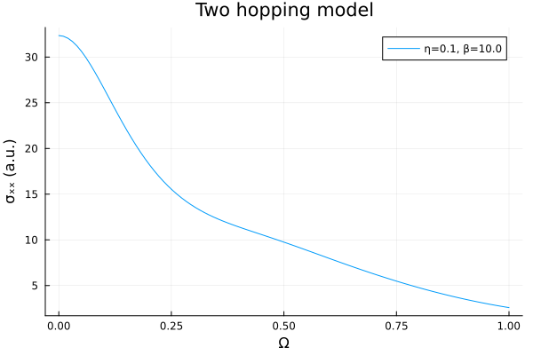
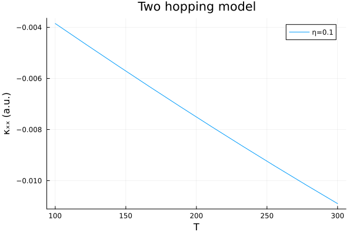

Optical conductivity
The optical conductivity is a response function that describes the electrical current response of a material to an incident electromagnetic field. AutoBZ.jl currently implements the longitudinal conductivity, which is the symmetric part of the conductivity tensor. After walking through these tutorials, continue with the demos/oc_test.jl script that compares several algorithms for the calculation of the conductivity of a Wannier90 Hamiltonian using the load_wannier90_data interface.
Model conductivity
For this tutorial and the electron density tutorial we define a simple tight-binding model based on $t_{2g}$ orbitals with a nearest neighbor intraband hopping and a next-nearest neighbor interband hopping.
using StaticArrays
using OffsetArrays
using AutoBZ
using LinearAlgebra
bz = load_bz(CubicSymIBZ(), Diagonal(ones(3)))
H = OffsetArray(zeros(SMatrix{3,3,Float64,9}, 3,3,3), -1:1, -1:1, -1:1)
# intraband hoppings
t = -0.25 # nearest-neighbor hopping
H[ 1, 0, 0] = H[-1, 0, 0] = [ 0; 0; 0;; 0; t; 0;; 0; 0; t]
H[ 0, 1, 0] = H[ 0,-1, 0] = [ t; 0; 0;; 0; 0; 0;; 0; 0; t]
H[ 0, 0, 1] = H[ 0, 0,-1] = [ t; 0; 0;; 0; t; 0;; 0; 0; 0]
# interband hoppings
t′ = 0.05 # next-nearest neighbor hopping
H[ 0, 1, 1] = H[ 0,-1,-1] = [ 0; 0; 0;; 0; 0;t′;; 0;t′; 0]
H[ 0, 1,-1] = H[ 0,-1, 1] = -[ 0; 0; 0;; 0; 0;t′;; 0;t′; 0]
H[ 1, 0, 1] = H[-1, 0,-1] = [ 0; 0;t′;; 0; 0; 0;;t′; 0; 0]
H[ 1, 0,-1] = H[-1, 0, 1] = -[ 0; 0;t′;; 0; 0; 0;;t′; 0; 0]
H[ 1, 1, 0] = H[-1,-1, 0] = [ 0;t′; 0;;t′; 0; 0;; 0; 0; 0]
H[ 1,-1, 0] = H[-1, 1, 0] = -[ 0;t′; 0;;t′; 0; 0;; 0; 0; 0]
hv = GradientVelocityInterp(HamiltonianInterp(AutoBZ.Freq2RadSeries(FourierSeries(H, period=2pi))), bz.A)3-dimensional and (1.0, 1.0, 1.0)-periodic GradientVelocityInterp in Wannier() gauge and Lattice() coordinates with Whole() velocitiesThe optical conductivity requires the velocity operators in addition to the Hamiltonian in order to compute the current-current correlations. For integrating the optical conductivity, we construct an OpticalConductivitySolver that computes the optical conductivity at a given chemical potential μ, inverse temperature β, and excitation frequency Ω
η = 0.1 # eV
μ = -0.669607319787773 # eV
β = 10.0 # 1/eV
Σ = EtaSelfEnergy(η)
atol=1e-3
rtol=0.0
solver = OpticalConductivitySolver(hv, bz, PTR(npt=50), Σ, QuadGKJL(); β, Ω=0.0, μ, abstol=atol/nsyms(bz), reltol=rtol);Then we can evaluate the frequency dependence of the conductivity and plot particular matrix elements.
using Plots
freqs = range(0, 1, length=100)
plot(freqs, Ω -> (AutoBZ.update_oc!(solver; β, Ω, μ); real(solve!(solver).value[1,1])), title="Two hopping model", xguide="Ω", yguide="σₓₓ (a.u.)", label="η=$η, β=$β")
Kinetic coefficients
A generalization of the optical conductivity is the KineticCoefficientSolver, which enables the calculation of additional transport properties. In fact, an OpticalConductivitySolver is implemented as a KineticCoefficientSolver and so we can use them interchangeably. For example, we can compute the Seebeck coefficient as a function of temperature
temps = range(100, 300, length=10)
f = T -> begin
AutoBZ.update_kc!(solver; β=inv(8.617333262e-5*T), Ω=0.0, μ, n=0)
kc_0 = solve!(solver).value
AutoBZ.update_kc!(solver; β=inv(8.617333262e-5*T), Ω=0.0, μ, n=1)
kc_1 = solve!(solver).value
-real(kc_1[1,1]) / real(kc_0[1,1])
end
plot(temps, f, title="Two hopping model", xguide="T", yguide="κₓₓ (a.u.)", label="η=$η")
The kinetic coefficients calculate the higher moments of the TransportDistributionSolver and are especially useful for thermal properties of solids.
Auxiliary integration
For very small scattering rates, i.e. $\eta < 10$ meV, adaptive integration algorithms are more efficient than uniform integration. However, they may suffer from a peak missing problem that we address with a technique called auxiliary integration using a AuxOpticalConductivitySolver.
using IteratedIntegration: AuxValue
η = 0.01 # eV
aux_atol = 1e-2
trG_auxfun(vs, G1, G2) = tr(G1) + tr(G2)
aux_solver = AuxOpticalConductivitySolver(trG_auxfun, hv, bz, IAI(AuxQuadGKJL()), Σ, AuxQuadGKJL(); Ω=0.0, μ, β, abstol=AuxValue(atol/η,aux_atol), reltol=rtol)
solve!(aux_solver).value.val3×3 StaticArraysCore.SMatrix{3, 3, ComplexF64, 9} with indices SOneTo(3)×SOneTo(3):
32.3526-2.00169e-17im 0.0+0.0im 0.0+0.0im
0.0+0.0im 32.3526-2.00169e-17im 0.0+0.0im
0.0+0.0im 0.0+0.0im 32.3526-2.00169e-17imTo summarize this method, we define a helper function, trG_auxfun that takes the velocities and Green's functions as its arguments, and should evaluate a quantity that is peaked in the same place as the conductivity integrand. Since the Green's function is less singular than the conductivity integrand at optical transitions, it is nicer to integrate adaptively and it helps the algorithm locate all highly-localized peaks with minimal additional effort.